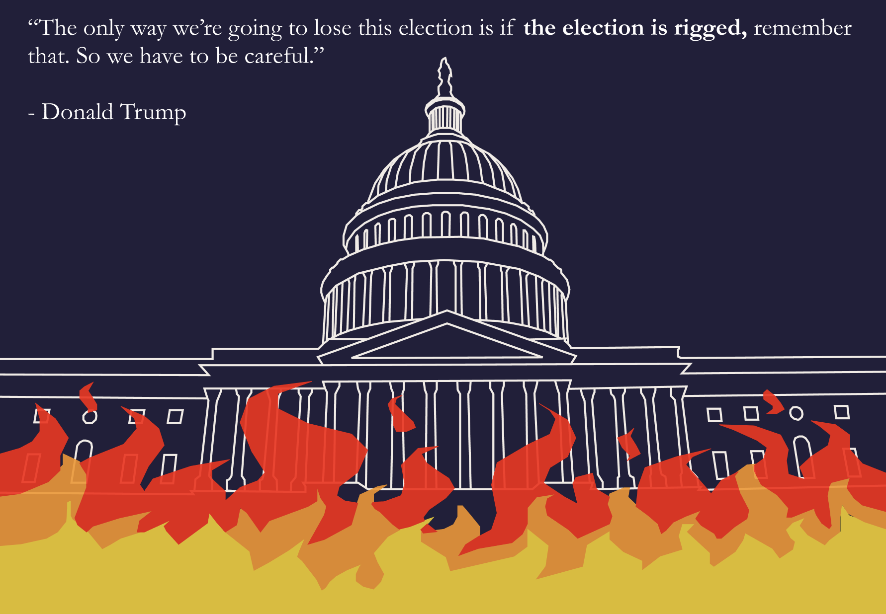
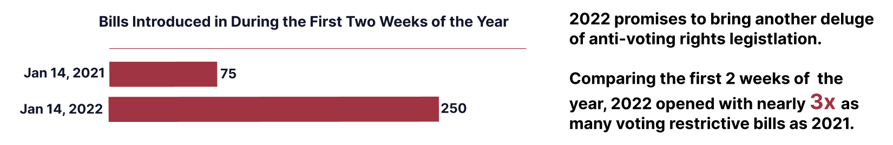

Does your vote count?
Exploring the Ways in Which New Legislation Threatens to Undermine the Integrity of American Democracy
Exploring the Ways in Which New Legislation Threatens to Undermine the Integrity of American Democracy
January 6th 2022...

On January 6, 2021 a mob of supporters of President Donald Trump stormed the United States Capitol and disrupted session of Congress that was then convening to certify the results of the 2020 election and confirm the election of Joe Biden. This attack was labeled as both a coup and an act of domestic terrorism. While frightening in and of itself, the January 6th attack on the Capitol also has set the stage for an unprecedented attack on voting rights--an attack that is currently playing out before our eyes, and has the potential to undermine the integrity of American democracy.
Due to the Covid-19 pandemic, governors and election officials in a variety of states instituted changes to make it safer to vote, including making it easier to vote by mail and extending early-voting periods. Since Democratic voters were more likely than Republican voters to vote by mail, Trump began a narrative that these voting policies had resulted in a rigged election. This narrative caused many throughout the country to believe that the election was stolen, and that they needed to “stop the steal” through violence if necessary
“The Big Lie” has driven a surge in legislation to restrict voting access
Legistlatures across the country have become emboldened to pass legislation restricting voting rights. From January 1st to December 31st of 2021, over 440 bills were introduced that contained provisions restricting voting access. Bills were introduced in every state in America except Vermont. Of these 440 bills, by December 31st, 19 states had passed 34 restrictive laws. These laws aimed to make it harder to remain on absentee voting lists, reduce polling place availability, and even make it illegal to hand out water and food to voters waiting in line at polling places. Despite the unprecendented amount of anti-voting of legistlation in 2021, the 2022 legislative year promises more of the same.


How do voting rights bills impact voters?

This discrepency is largely due to increases in population. From 2010-2020, the population in metro Atlanta grew 16%, outpacing the state's population growth of 11%. This resulted in a sharp increase in the number of voters assigned to each poll.
Click "Start Animation" below to see the increase in number of voters per polling location from 2012-2020.

This growth in voter rolls has been coupled with a 10% reduction in polling locations statewide. The reduction in polling locations has primarily caused long lines in nonwhite neighborhoods


Despite these voting difficulties, Democrats still won the state of Georgia
In Georgia, 73% of Democrats in the state are Black, and only 25% are white. Disenfranchising Black voters will disproportionately harm the Democratic party. In response to this Presidential loss, Georgia Republicans introduced new legislation, the Election Integrity Act of 2021 which curbs voting access for many individuals, and disproportinately targets nonwhite voters.

What does the Election Integrity Act do?